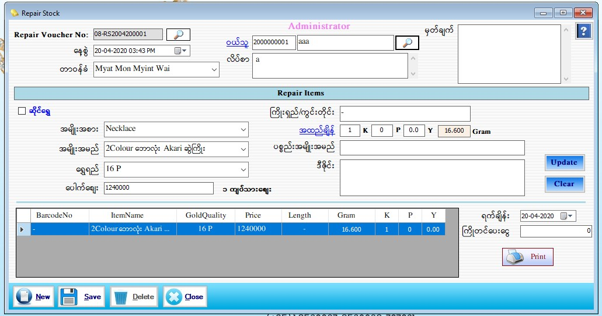

Repair Receive Setup

- Transaction အောက်မှ Repair Stock Form ကိုဖွင့်ပါ။
- Repair Stock Form သည် ပြင်ထည်လက်ခံသော Form ဖြစ်ပါသည်။
- Repair Voucher No. သည် Softwate မှ Auto တပ်ပေးပါသည်။
- နေ့စွဲတွင် လက်ရှိရောက်နေသော နေ့စွဲ နှင့် အချိန်ကို ဖော်ပြပေးနေပါမည်။
- ဝန်ထမ်းကိုရွေးချယ်ပါ။ ထို့နောက် ဝယ်သူ ကို ရွေးချယ်ပါ။ ဝယ်သူ အသစ်ဖြစ်ပါက ဝယ်သူ link Click ကို နှိပ်ပြီး အသစ်ထည့်နိုင်ပါသည်။
- ပြင်ထည်သည် ဆိုင်ရွှေ ဖြစ်ပါက ဆိုင်ရွှေ check box ကို on ပါ။ Barcode No ဘေးတွင်ရှိသော Search Box ကို နှိပ်လိုက်ပါက ရွေးချယ်ထားသော ဝယ်သူနှင့် သက်ဆိုင်သော Barcode များ ကျလာပါလိမ့်မည်။ ပြင်ထည်နှင့် သက်ဆိုင်သော Barcode ကို ရွေးချယ်ပါ။
- ပေါက်စျေးနှင့် အတူ သက်ဆိုင်ရာ Data များ ကျလာပါလိမ့်မည်။ အထည်ချိန် ကို ပြန်ချိန်ပါ။ ပစ္စည် အမျိုးအမည် Text Box သည် ဆိုင်ရွှေ ဖြစ်သည့်အတွက် အလုပ် မလုပ်ပါ။ ဒီဇိုင်း Text Box တွင် ပစ္စည်း၏ ပြင်မည့် ဒီဇိုင်းကို ထည့်ပါ။
- ဆိုင်ရွှေ မဟုတ်ဘဲ အပြင်ရွှေ ဖြစ်ပါက ဆိုင်ရွှေ check box ကို မon ရပါ။ အမျိုးအစား၊ အမျိုးအမည် များ ကို သတ်မှတ်ပါ။ အမျိုးအစား၊ ပစ္စည်းအမျိုးအမည် သတ်မှတ်ထားခြင်းမရှိသော အပြင်ရွှေ ဖြစ်ပါက ပစ္စည်းအမျိုးအမည် Text Box တွင် သတ်မှတ်ပါ။ အပြင်ရွှေ ဖြစ်သည့်အတွက် ထို Text Box တွင်သတ်မှတ်နိုင်ပါသည်။ ထို့နောက် အထည်ချိန် ချိန်ပြီး ကျန်ရှိသော Data များကို ဖြည့်စွက်ပါ။
- Add button နှိပ်လိုက်ပါက အောက်ဘက်ရှိ Grid ထဲသို့ရောက်သွားပါမည်။ ရက်ချိန်းတွင် ပြင်ထည်ပြန်ပေးမည့် နေ့စွဲကိုသတ်မှတ်ပါ။ ကြိုတင်ပေးငွေကို ပေးထားခဲ့ပါက ကြိုတင်ပေးငွေ Text Box တွင် ထည့်ပါ။
- Data များဖြည့်ပြီးပါက Save Button ကိုနှိပ်၍ သိမ်းဆည်းနိုင်ပါသည်။
- သိမ်းဆည်းပြီးသား Data များအား ပြန်လည်ကြည့်ခြင်း၊ ပြင်ဆင်ခြင်းများပြုလုပ်ချင်ပါက Repair Voucher No. ၏ ဘေးတွင် ရှိသော မှန်ဘီလူး button ကိုနှိပ်ပြီးပြန်လည်ကြည့်ရှုပြင်ဆင်ချင်သော Repair Voucher အား ရွေးချယ် ပြီးပြင်နိုင် ပါသည်။
- Repair Voucher ထုတ်လိုလျှင် Print Button ကိုနှိပ်၍ Voucher ထုတ်နိုင်ပါသည်။
- သိမ်းဆည်းပြီးသား ထည့်ပြီးသား Data များကို ဖျက်လိုလျှင် Repair Voucher No. ၏ ဘေးတွင် ရှိသော မှန်ဘီလူး button အား နှိပ်ပြီးရှာပါ။ ထို့နောက် မိမိဖျက်လိုသော Data ကို Delete Button ကိုနှိပ်၍ ဖျက်နိုင်ပါသည်။
- Repair Stock အသစ်ထည့်လိုပါက New Button ကိုနှိပ်ပြီး အသစ်ထည့်နိုင်ပါသည်။
- Repair Stock Form အား အသုံးပြုပြီးပါက Close Button ကိုနှိပ်၍ ပိတ်နိုင်ပါသည်။